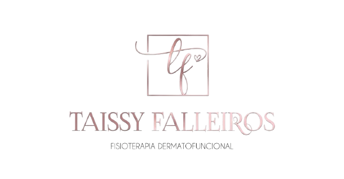
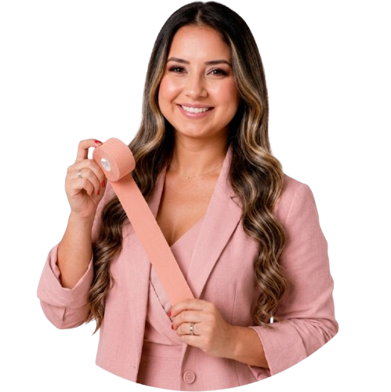
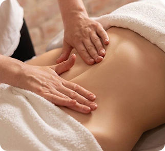
Reduz inchaços, estimula a circulação linfática e proporciona sensação de leveza e bem-estar.
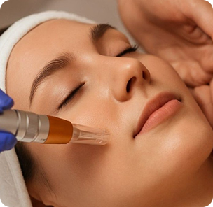
Acelera a recuperação pós-operatória, reduz edemas, favorece a cicatrização e promove mais conforto e bem-estar durante todo o tratamento.
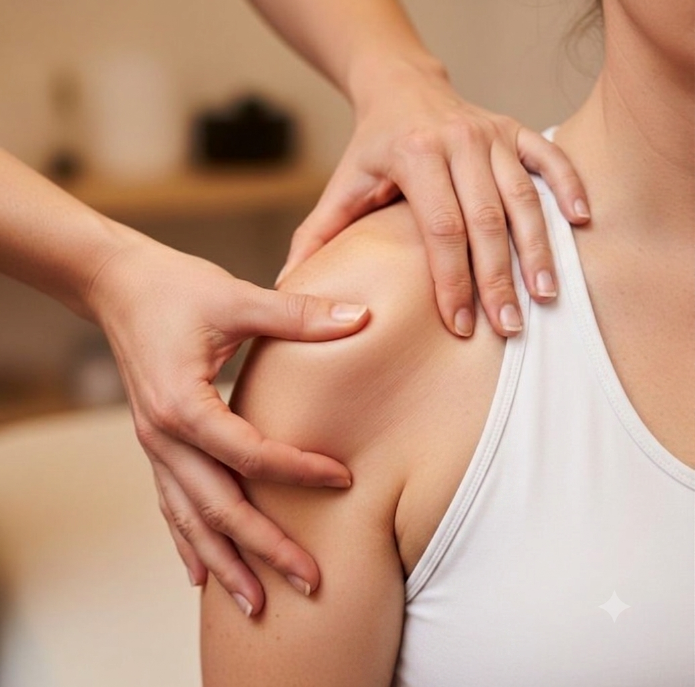
Alivia dores, reduz tensões musculares e melhora a mobilidade, contribuindo para uma recuperação mais rápida e funcional.
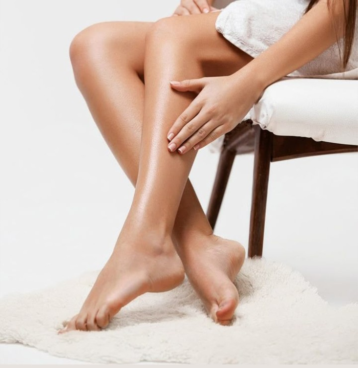
Acelera a recuperação pós-operatória, reduz edemas, favorece a cicatrização e promove mais conforto e bem-estar durante todo o tratamento.
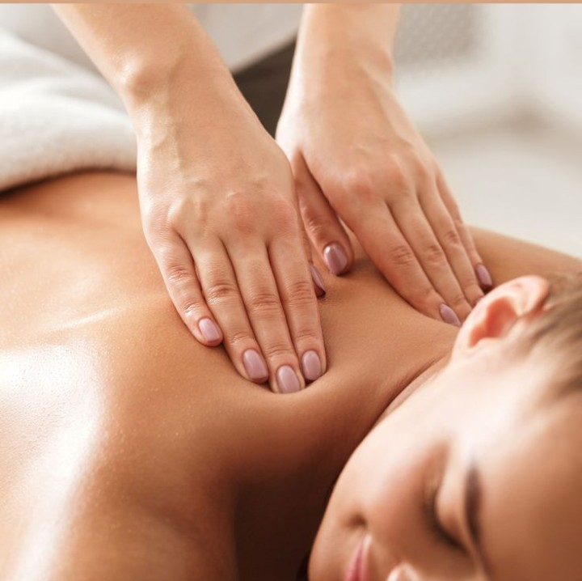
Fortalecem a musculatura, restauram os movimentos e auxiliam na prevenção de lesões e na recuperação funcional do corpo.
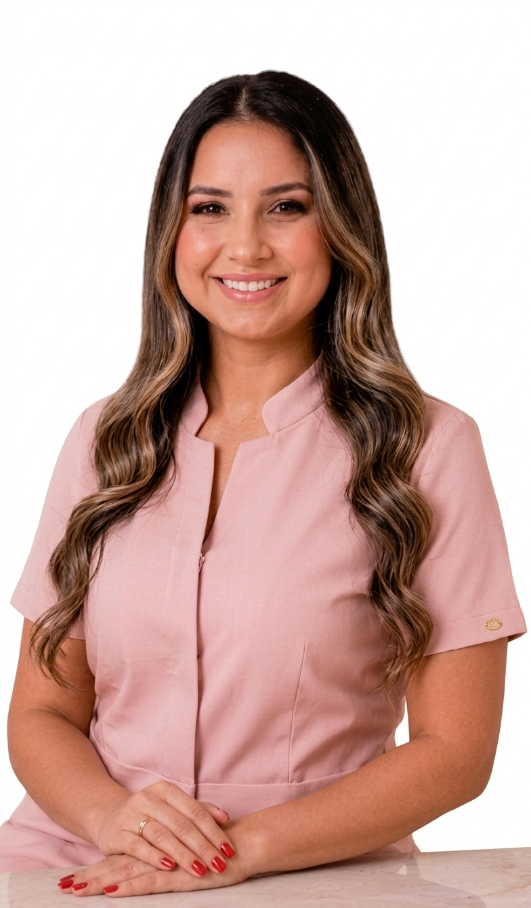
Além dos atendimentos especializados, oferecemos cursos voltados ao aperfeiçoamento de profissionais da área da saúde. As capacitações incluem Taping TF no pré e pós-parto, Tape Mecânico e Drenagem Linfática. Os cursos unem teoria e prática, proporcionando aprendizado de qualidade, técnicas atualizadas e aplicação segura no dia a dia clínico.
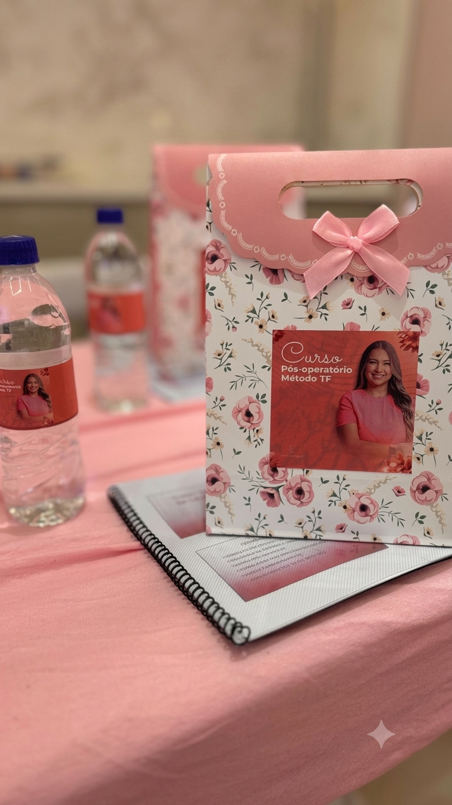
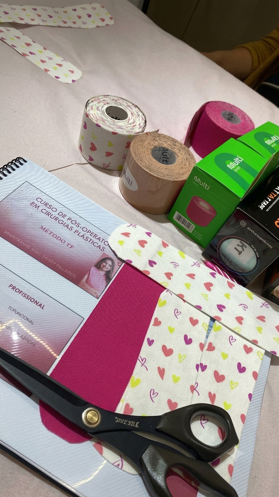
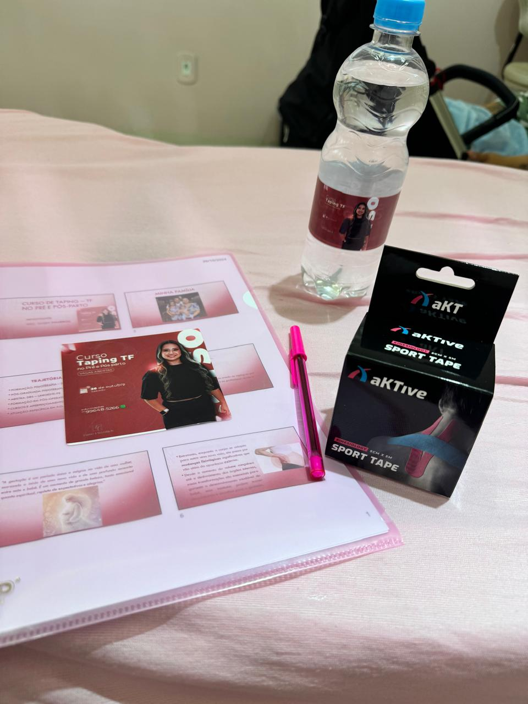
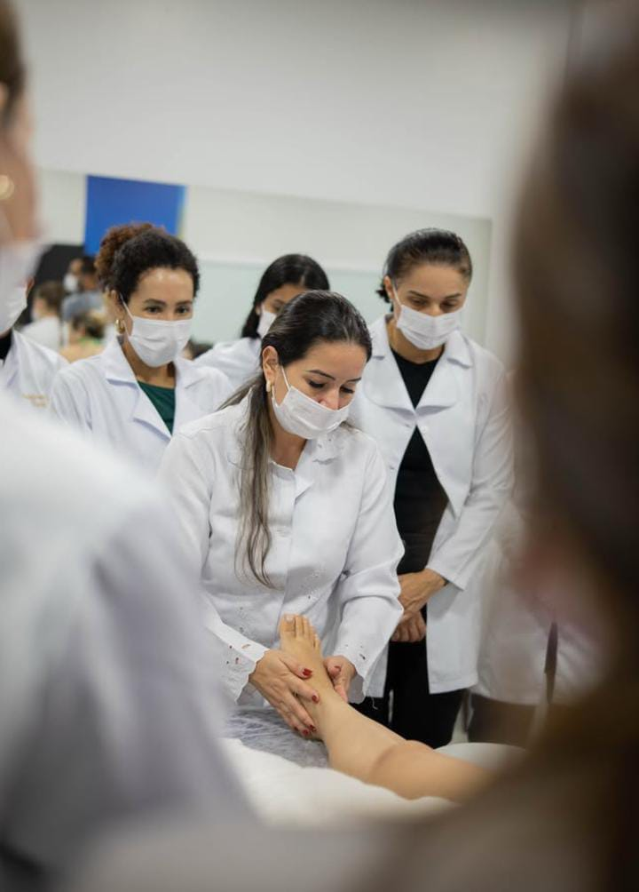
MSc. Taissy Falleiros é Fisioterapeuta Dermatofuncional, mestre pela Universidade Estadual do Paraná (Unioeste) e professora na UNIGRAN – Centro Universitário da Grande Dourados. Especialista no método Taping TF, atua na formação de profissionais por meio de cursos e treinamentos voltados à fisioterapia dermatofuncional e ao pós-operatório de cirurgias plásticas. Sua trajetória é marcada pela união entre conhecimento científico, prática clínica e compromisso com a excelência, oferecendo um ensino baseado em evidências e técnicas seguras.
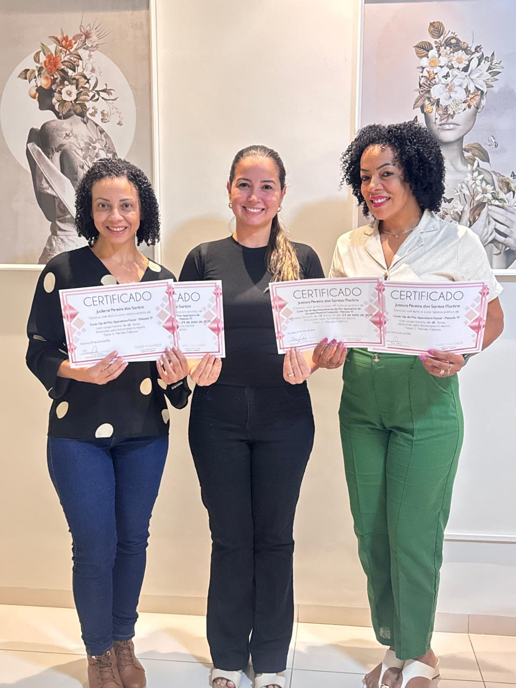
Taissy Falleiros forma fisioterapeutas para atuar com segurança e excelência em fisioterapia dermatofuncional. Os cursos, presenciais em sua clínica em Dourados/MS ou online, unem teoria, prática e acompanhamento de especialistas, com certificação garantida.
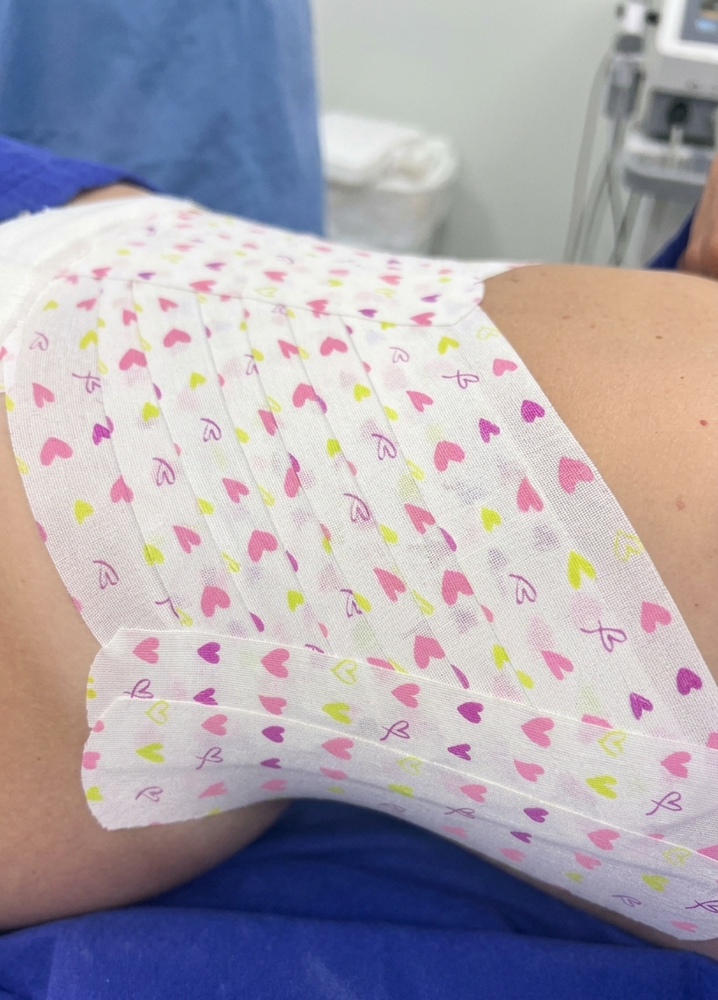
Durante atendimentos hospitalares e a domicílio, MSc. Taissy Falleiros trabalha exclusivamente com o Taping Aktive em pacientes no pós-parto e pós-operatório. A técnica auxilia na redução de edemas, no alívio de desconfortos e na recuperação mais rápida da mobilidade, com aplicação individualizada de acordo com o quadro de cada paciente.
Oferecemos as duas modalidades. Os cursos presenciais acontecem na clínica em Dourados/MS, e o curso de Taping TF também está disponível de forma online, para quem não pode se deslocar.
Sim, os cursos profissionais são voltados para fisioterapeutas e estudantes da área que buscam se especializar em fisioterapia dermatofuncional e técnicas complementares.
Cada sessão dura em média de 50 a 60 minutos. O número de sessões varia conforme o objetivo do tratamento e é definido após uma avaliação individual.
Sim, todos os cursos são certificados e reconhecem a carga horária teórica e prática, podendo ser utilizados para comprovação profissional.
Entre em contato pelo WhatsApp ou Instagram informados na seção "Agende Conosco". O retorno é feito conforme a disponibilidade na agenda.
Cuidar da sua saúde é o que mais me importa. Me chame pelo canal que preferir e vamos agendar seu horário.